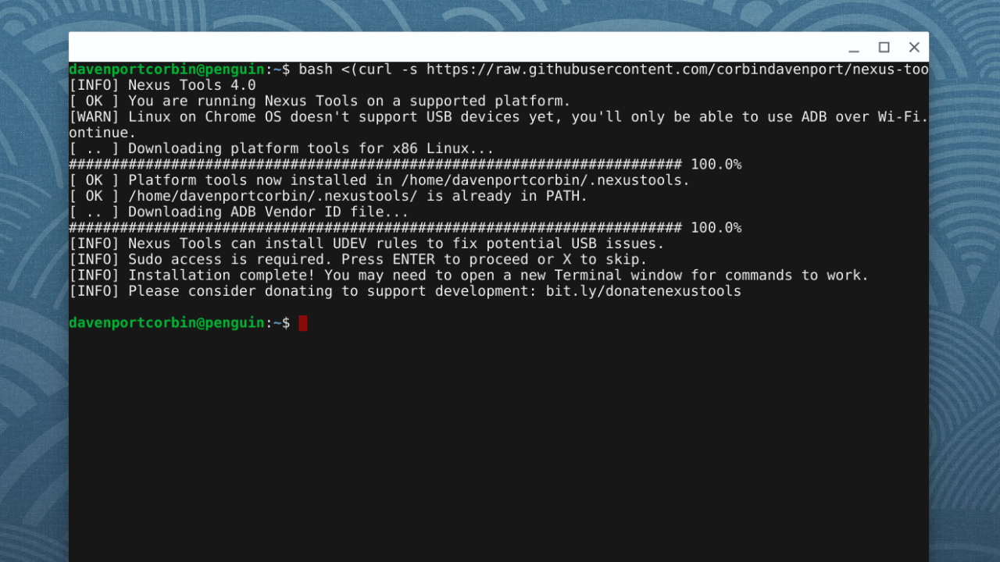
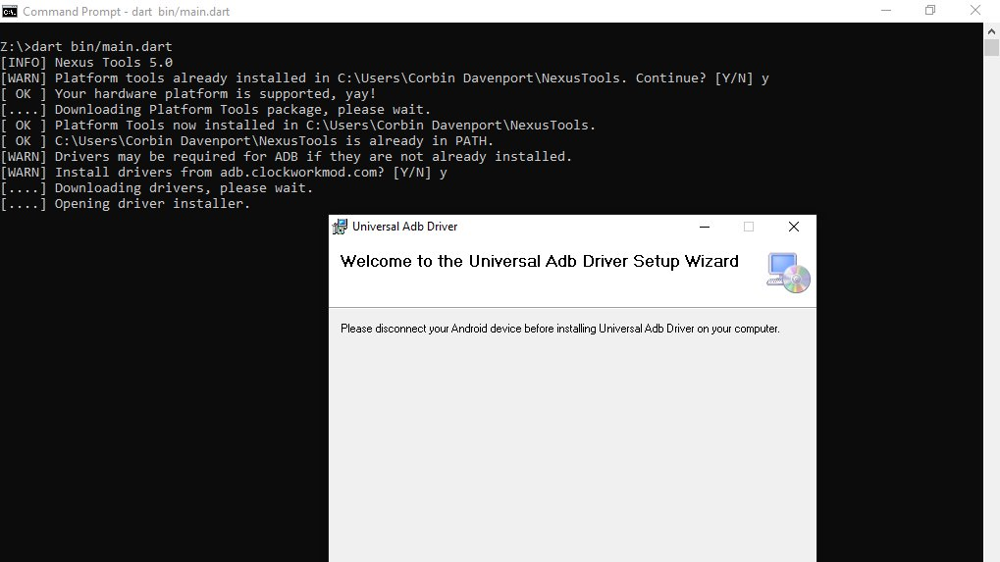
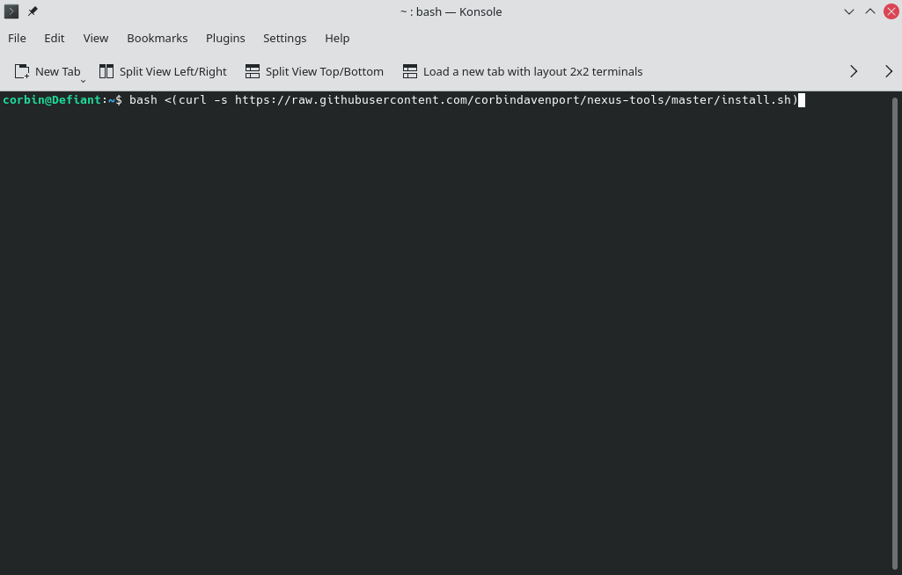
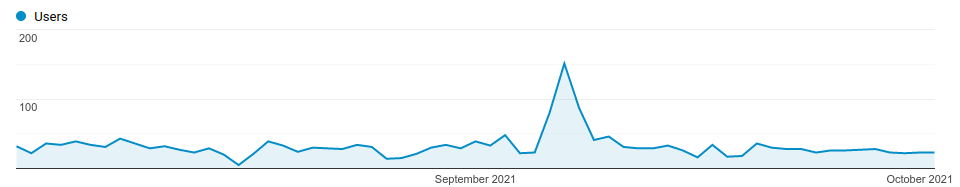

Last month, I updated a project of mine called Nexus Tools, which is an installer for Google’s Android SDK Platform Tools. It’s one of my most popular software projects, with around 1.1-1.3k users per month, and version 5.0 is a complete rewrite. The switch seemed to go fine (no bug reports yet!), so I wanted to write a blog post about the development process, in the hopes that it might help others experimenting with bash scripts or Dart programming.
Before v5.0, Nexus Tools was written as a bash script, which is a series of commands that runs in Bash Shell (or a Bash-compatible environment). I only supported Mac and Linux at first, but over the years I also added compatibility for Chrome OS, Bash for Windows 10, and Macs with Apple Silicon chips. The main process is the same across all platforms: Nexus Tools creates a folder in the home directory, downloads and unzips the SDK Platform Tools package from Google’s server, and adds it to the system path. Nothing too complicated.

However, Nexus Tools still broke in some manner almost every time I updated it. Bash scripts are difficult to adequately test, because they are interpreted at runtime by the Bash shell, instead of being compiled as machine code. There are different versions of Bash being used today, and some versions don’t support all scripting features. This is especially an issue on macOS, which still ships with Bash v3.2 from 2007, because newer versions use the GPLv3 license that Apple doesn’t want to deal with. Apple switched the default shell to Zsh on newer macOS versions, but Zsh scripts are pretty different than Bash scripts.
Bash scripts also can’t do much on their own — they call the applications present on the computer. Most Linux and macOS systems have the same set of basic tools installed that Nexus Tools requires (mainly curl and unzip), but verifying that each utility I wanted to use worked similarly on each supported platform was an added layer of complexity that I didn’t enjoy dealing with.
In short, bash scripts are great for scripting your own PC or environments similar to each other, but less so for multiple operating systems and versions of Bash shell.
I decided to try rewriting Nexus Tools as a command-line Dart application. Dart is a programming language created by Google, originally intended for use in web applications, but more recently has become part of the larger Flutter framework for creating web/mobile/desktop apps. However, you can also create command-line applications and scripts in Dart, which can be compiled for use on Mac, Linux, and Windows.
There are many other ways of creating command-line compiled applications that are cross-platform, but Dart’s JS-like syntax is easy for me to deal with, so I went with it.
The bash script version of Nexus Tools was around 250 lines of code, and even with my limited Dart experience, it only took around 8-10 hours spread across multiple days to get a functionally-identical version working in Dart. Not too bad!
Just like the bash version, the Dart version created a folder in the home directory, downloaded the tools and unzipped them, and then added the directory to the system’s path. The download is handled by Dart’s own http library, and then unzipped with the archive library. One of my goals here was to avoid calling external tools wherever possible, and that was (mostly) achieved. The only times Nexus Tools calls system commands is for file operations and for installing ADB drivers on Windows — more on that later.
I still had to write a few functions for functionality that Dart and its main libraries don’t seem to provide, like one for adding a directory to the system path and another for determining the CPU architecture. I was a bit surprised by that last one — the ‘io’ library has an easy way to check the host operating system, but not the CPU?
My main concern with switching to a compiled application was security on macOS. Apple requires all applications, even ones distributed outside the App Store, to be notarized with an Apple-issued developer ID or an error message will appear. However, the Nexus Tools executable created with dart compile doesn’t seem to have any issues with this. Maybe Apple doesn’t enforce signing with command-line applications?
Dart supports Windows, so switching to Dart allowed me to add Windows support without much extra work. The process for installing the Android SDK Tools on Windows involves most of the same steps as on Mac/Linux, but calls to the system required different commands. For example, adding Nexus Tools to the system path on Windows just requires calling the “setx” command on Windows, but on macOS and Linux I have to add a line to a text file.

The tricky part with using the Android Platform Tools applications on Windows is usually drivers, so I wanted to integrate the step of optionally installing drivers when Nexus Tools is running on Windows. Thankfully, Koushik Dutta created a Universal ADB Drivers installer a while back that solves this problem, so Nexus Tools just downloads that and runs it.
The main unique feature about Nexus Tools is that it runs without actually downloading the script to your computer — you just paste in a terminal command, which grabs the bash script from GitHub and runs it in the Bash Shell.
bash <(curl -s https://raw.githubusercontent.com/corbindavenport/nexus-tools/master/install.sh)
I wanted to retain this functionality for two reasons. First, it’s convenient. Second, many articles and tutorials written over the years that mention Nexus Tools just include the installation command without any links to the project.
I reduced the bash script code to the bare minimum required to download the Nexus Tools executable and run it, and you can see it here. The neat part is that it uses GitHub’s permalinks for a project’s downloads (e.g. project/releases/latest/download/file.zip), so the script always grabs the latest available version from the releases page — I don’t have to update the script at all when I publish a new version, I just have to make sure the downloads have the correct file name.
I also created a similar wrapper script for Windows, which runs when you paste the below command into PowerShell (or the fancy new Windows Terminal).
iex ((New-Object System.Net.WebClient).DownloadString('https://raw.githubusercontent.com/corbindavenport/nexus-tools/master/install.ps1’))
I’m pretty happy that running Nexus Tools on Windows is just as quick and easy as on Mac and Linux. Here’s what it looks like on Linux:

And here’s what it looks like on Windows 10:
Pretty neat!
I definitely could have continued to maintain Nexus Tools as a bash script, given enough testing and debugging with every release. The transition was mostly for my own personal reasons rather than strictly technological reasons — I was really sick of bash scripting. And in the end, this is my software project, so I’m gonna do what I want!
I think the switch has been a success, though. It runs exactly as well as the previous bash version (you can’t even tell a difference on the surface), and I’ve been able to add Windows support with minimal additional work. I haven’t received a single bug report, and the average number of people using Nexus Tools every day has remained at the same level of 20-50 people.

The one downside is that Nexus Tools doesn’t run natively on Apple Silicon Macs, because I don’t have an ARM Mac to compile it on (and Dart’s compiler doesn’t support cross-compiling), but it works fine in Apple’s Rosetta compatibility layer.